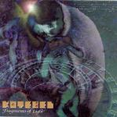

| Artist: | Kotebel |
| Title: | Fragments Of Light |
| Label: | Musea FGBG4509.AR |
| Length(s): | 72 minutes |
| Year(s) of release: | 2003 |
| Month of review: | [02/2004] |
| 1) | Hades | 12.01 |
| 2) | Identidad Legal | 3.42 |
| 3) | El Quimerista I | 2.38 |
| 4) | Memoria | 7.48 |
| 5) | Fuego | 14.56 |
| 6) | El Quimerista II | 5.12 |
| 7) | Espejos | 7.53 |
| 8) | Trozos De Luz | 3.12 |
| 9) | El Quimerista III | 2.24 |
Children Suite (Addendum)
| 10) | I En El Parque | 1.05 |
| 11) | II La Siesta | 1.21 |
| 12) | III El Papagayo | 1.06 |
| 13) | IV Contemplando Las Estrellas | 1.39 |
| 14) | V El Bachacalabo | 1.24 |
| 15) | VI A Traves Del Espejo | 1.52 |
| 16) | VII Cuentos Del Bosque | 1.31 |
| 17) | VIII Fantasia | 2.15 |
Hades is an epic sounding track combining latin chanting and both melodically and more avant directed sections. This is a very clear example of a track in which elements, such as the latin chanting, might be overdominating, but are balanced out due to adding in a number of them.
The El Quimerista tracks are sort of intermezzos, albeit a tad long for such. The first is built around acoustic guitar, the second on electric guitar, bringing together progressive and guitar music. Staying focussed on melody while stepping up on complexity, this track comes along very nicely (we thank you). Part three is a shorter synth track.
Memoria has flute and piano, quite tranquil, with tense and urgent spoken vocals. Once again an alteration that works quite well. The vocals raise the tension, which is then aleviated by the flute and piano.
Fuego starts out with unfortunately blaring synths, but those are soon set aside for self duet by Juan Olmos, accompanied by mostly acoustic instruments, with the return of the spoken words as well, eerie synths in the back. For a change, the fifteen minutes of the compositions really form into one composition, working towards a climax in which everything comes together.
Espejos is a piano track, with added bass and only after getting halfway through some synth melodies. The track has some trouble getting this started, and is longish for its content. Still it is a nice one.
Trozos De Luz is shortish, starting out with fast synths and Prieto's vocals, which sound opera-like now.
The addendum Children Suite is a piano solo concerto. Pretty nice stuff, but some of the more gentle material could come just a bit too close to new age at times.